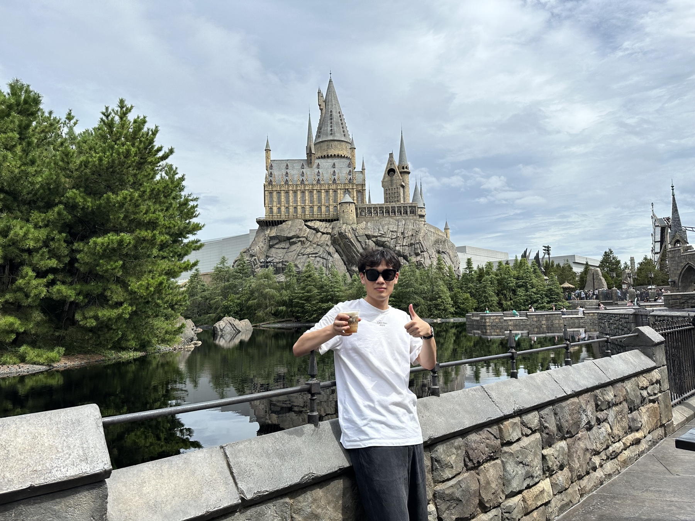
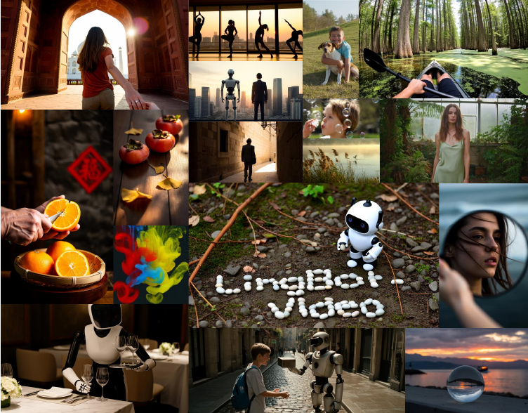
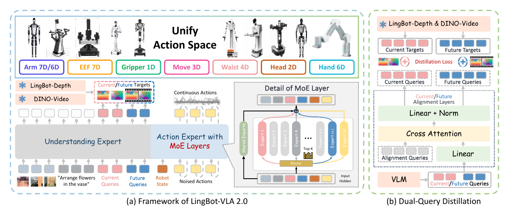
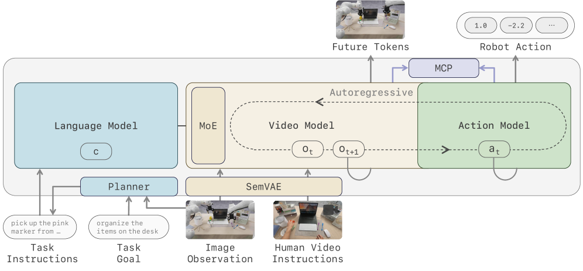
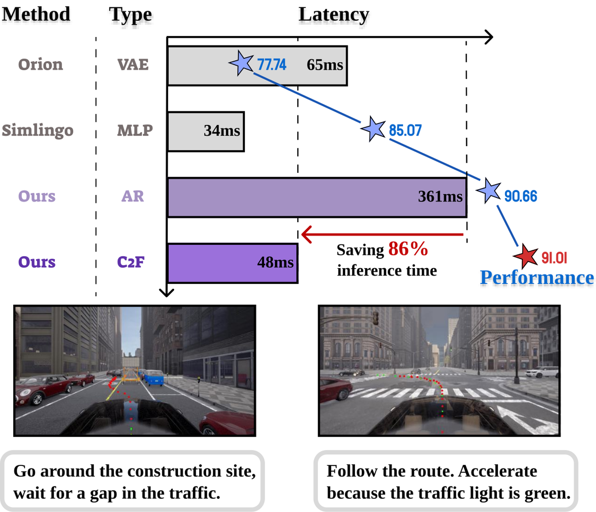
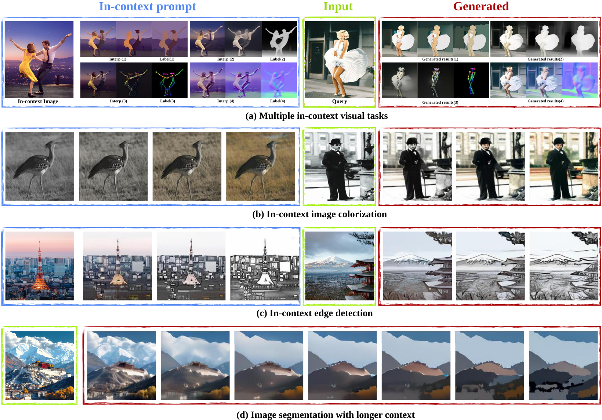
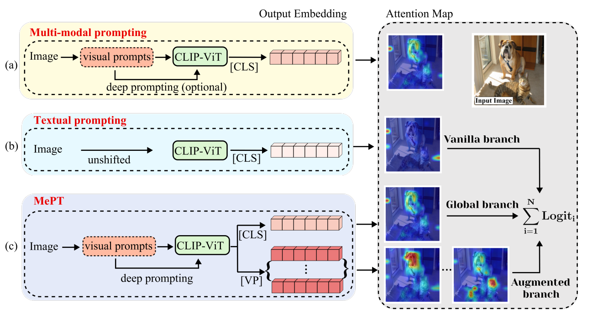

Xinyang Wang
I am a researcher at ViLab / RobbyAnt, Ant Group. I received both my bachelor's and master's degrees from Zhejiang University, where I was advised by Prof. Wei Chen at the State Key Laboratory of CAD&CG.
My research interests include embodied intelligence and video generation.
wxy10061006@gmail.com
Publications
-

-

From Foundation to Application: Improving VLA Models in Practice
-

Native Video-Action Pretraining for Generalizable Robot Control
-

Unifying Language-Action Understanding and Generation for Autonomous Driving
-

Diffusion Guided Chain-of-Vision for Large Autoregressive Vision Models
-

MePT: Multi-Representation Guided Prompt Tuning for Vision-Language Model